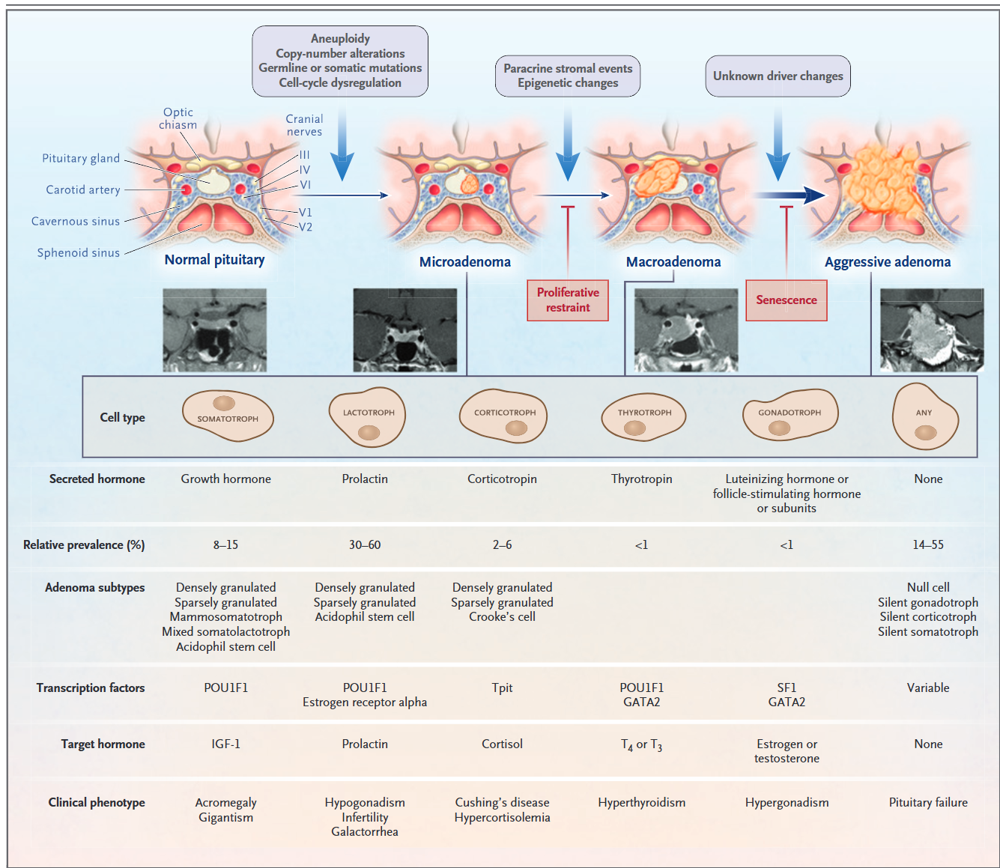
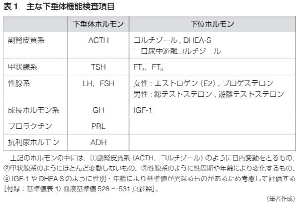
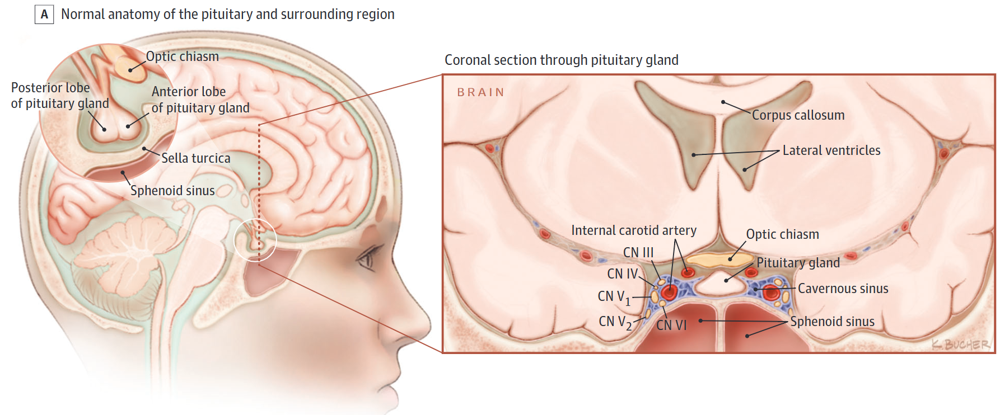
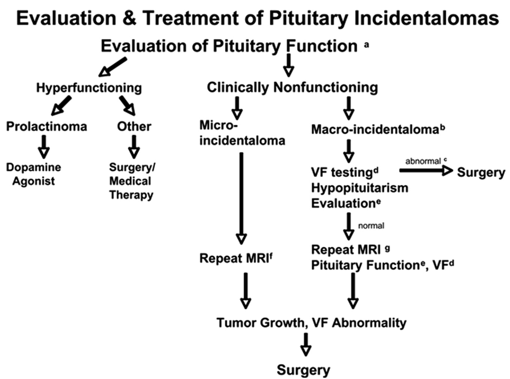
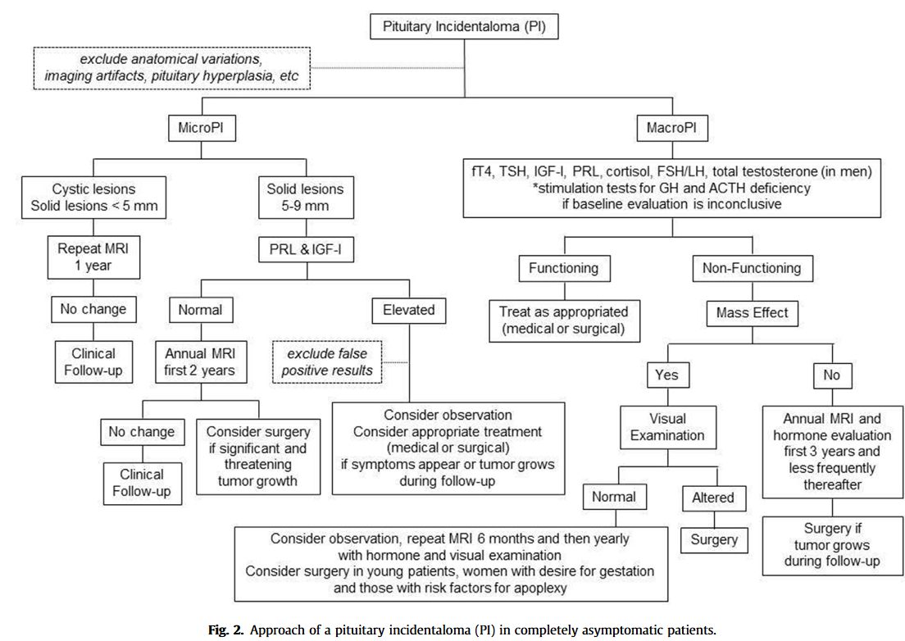

なんで頭部CT撮ってんだよ！
東京医療センター総合内科
2026-05-27
Radiology. 1994;193(1):161-164. doi:10.1148/radiology.193.1.8090885
| 原疾患 | 頻度 |
|---|---|
| 下垂体腺腫 | 80-90% |
| 頭蓋咽頭腫 | 3% |
| Rathke嚢胞 | 2% |
| 髄膜腫 | 1% |
| 下垂体炎 | 1%未満 |
| 脳動脈瘤 | 1-2% |
DynaMed. Sellar Mass - Approach to the Patient. EBSCO Information Services. Accessed 2025年8月2日. https://www.dynamed.com/approach-to/sellar-mass-approach-to-the-patient

N Engl J Med. 2020;382(10):937-950. doi:10.1056/NEJMra1810772
J Clin Endocrinol Metab. 2011;96(4):894-904. doi:10.1210/jc.2010-1048

竹内靖博・竹下彰・辰島啓太編著(2020).虎の門病院内分泌クリニカルプラクティス―外来・入院からフォローアップまで.クリニコ出版 - ホルモン検査は日内変動が大きい - Positive/Negative feedbackにより代償されやすい - ホルモン欠乏の検査: 最も分泌が多い時間帯の測定で判断 - ホルモン分泌を促進する介入した後の検査もあるがRiskが高い - ホルモン過剰の検査: ホルモンを抑制する介入をした上で測定
JAMA. 2023;329(16):1386-1398. doi:10.1001/jama.2023.5444
JAMA. 2023;329(16):1386-1398. doi:10.1001/jama.2023.5444
J Clin Endocrinol Metab. 2011;96(4):894-904. doi:10.1210/jc.2010-1048 - 個人的には、Macroadenomaならばルーチンで行うべきと考える - 3種類の方法があるが、一番簡単なのはLDST - LDST(1mg Dex負荷試験)：感度98.6%, 特異度90.6% - 24時間蓄尿のFree cortisol:感度94%, 特異度93% - 夜間唾液中cortisol：感度95.8%, 特異度93.4%
Best Pract Res Clin Endocrinol Metab. 2019;33(2):101268. doi:10.1016/j.beem.2019.04.002 Peter J Snyder, MD. Pituitary incidentalomas. In: UpToDate, Connor RF (Ed), Wolters Kluwer. Accessed August 15, 2025. https://www.uptodate.com.
竹内靖博・竹下彰・辰島啓太編著(2020).虎の門病院内分泌クリニカルプラクティス―外来・入院からフォローアップまで.クリニコ出版 J Clin Endocrinol Metab. 2011;96(4):894-904. doi:10.1210/jc.2010-1048
JAMA. 2023;330(15):1472-1483. doi:10.1001/jama.2023.19052
DynaMed. Sellar Mass - Approach to the Patient. EBSCO Information Services. Accessed 2025年8月2日. https://www.dynamed.com/approach-to/sellar-mass-approach-to-the-patient J Clin Endocrinol Metab. 2011;96(4):894-904. doi:10.1210/jc.2010-1048
竹内靖博・竹下彰・辰島啓太編著(2020).虎の門病院内分泌クリニカルプラクティス―外来・入院からフォローアップまで.クリニコ出版 - 診断のGold standardは存在しない - 水制限試験がしばしば初期の検査で行われる - 多尿 (> 50 mL/kg in 24 hours or 3.5 L/day in a 70kg) の時に血清と尿中浸透圧を同時測定する - 尿糖なしの時に、血清浸透圧 >295 mOsm/kg、尿浸透圧が600 mOsm/kgの時(尿と血清浸透圧の比が2以上)が正常 - 尿崩症は血清浸透圧 >295 mOsm/kgの時に尿浸透圧が600 mOsm/kg未満の時(尿と血清浸透圧の比が2未満)で診断される - 水分制限試験の亜種として、3%食塩水刺激試験がある
J Clin Endocrinol Metab. 2011;96(4):894-904. doi:10.1210/jc.2010-1048 Peter J Snyder, MD. Pituitary incidentalomas. In: UpToDate, Connor RF (Ed), Wolters Kluwer. Accessed August 15, 2025. https://www.uptodate.com.

JAMA. 2017;317(5):516-524. doi:10.1001/jama.2016.19699
Clin Med. 2023;23(2):129-134. doi:10.7861/clinmed.2023-0020
J Clin Endocrinol Metab. 2016;101(11):3888-3921. doi:10.1210/jc.2016-2118

J Clin Endocrinol Metab. 2011;96(4):894-904. doi:10.1210/jc.2010-1048
J Clin Endocrinol Metab. 2011;96(4):894-904. doi:10.1210/jc.2010-1048

Best Pract Res Clin Endocrinol Metab. 2019;33(2):101268. doi:10.1016/j.beem.2019.04.002